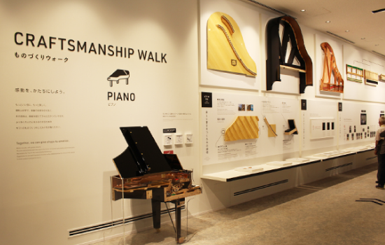
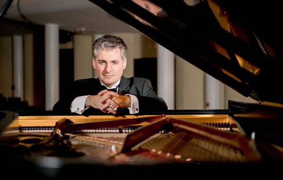
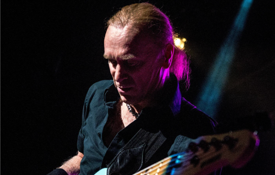
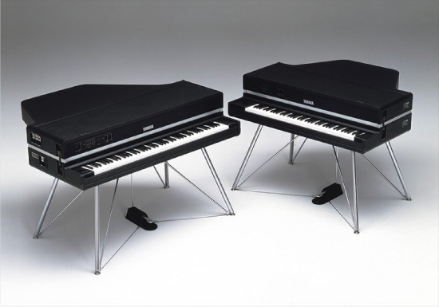
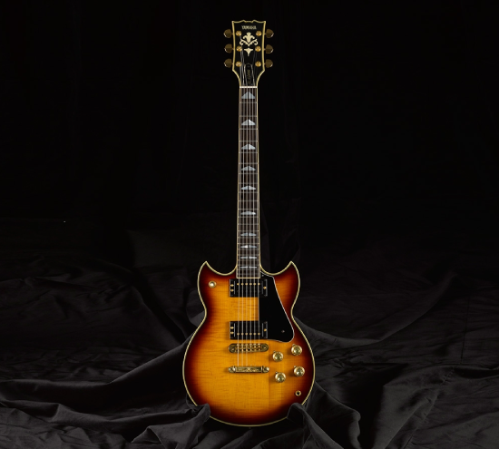
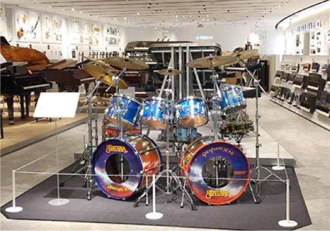

Yamaha Musical Instrument Exhibition 2022

18-19 JUNE 2022
10.00AM - 10.00PM
Atria Shopping Gallery
Concierge Counter, Ground Floor
Jalan SS 22/23, Damansara Jaya,
47400 Petaling Jaya, Selangor
47400 Petaling Jaya, Selangor
SPECIAL PERFORMANCE

Edisher Savitski
18th JUNE 2022, 8.00pm
The first prizewinner of the Third International Piano-E-Competition in 2006 and the Hilton Head Internatio nal Piano Competition in 2001, and took top prizes at the First International Piano-E-Competition in Minneapolis and the William S. Byrd International Piano Competition in Michigan.
BILLY SHEEHAN
19th JUNE 2022, 8.00pm
Has played bass on dozens of records and toured all over the world for many decades, with a unique and original style of playing that has been widely celebrated and documented.

NEW INSTRUMENT

CP-80
Electric Grand / 1978
The CP-80 was an electric grand piano developed to deliver the depth of expression of an acoustic instrument while holding its own when performing on stage with electric guitars played at full volume through an amplifier and speakers. In contrast to the CP-70, which has 73 keys, the CP-80 has 88 keys just like a grand piano.
Its characteristic bright, edgy sound swept the music scene, with the CP-80 seeing extensive use in both live performance and recording scenarios.
Its characteristic bright, edgy sound swept the music scene, with the CP-80 seeing extensive use in both live performance and recording scenarios.
SG-2000
Electric Guitar / 1976
The SG2000 was the result of further modification of the SG based on the advice of Carlos Santana.
With a single-piece construction that transmits the vibrations of the strings to the body more effectively, and a sustain plate embedded directly into the body below the saddle, the SG2000 offered superb sustain.
It features a unique open humbucker supported at three points for easy adjustment of the pickup height and angle, and is characterized by a sweetly beguiling sound.
With a single-piece construction that transmits the vibrations of the strings to the body more effectively, and a sustain plate embedded directly into the body below the saddle, the SG2000 offered superb sustain.
It features a unique open humbucker supported at three points for easy adjustment of the pickup height and angle, and is characterized by a sweetly beguiling sound.


YD9000
Drum Set / 1977
The starting point for the Yamaha drums that are so popular with top drummers around the world. The YD9000 was the base for later Recording Rustom models.
Distinguished by the elastic and natural sound of the middle and low range that comes from birch wood, the deep sound of this kit was loved by drummers around the globe, especially those playing jazz and fusion who were particular about the sound of their drums.
Distinguished by the elastic and natural sound of the middle and low range that comes from birch wood, the deep sound of this kit was loved by drummers around the globe, especially those playing jazz and fusion who were particular about the sound of their drums.
2022 YAMAHA